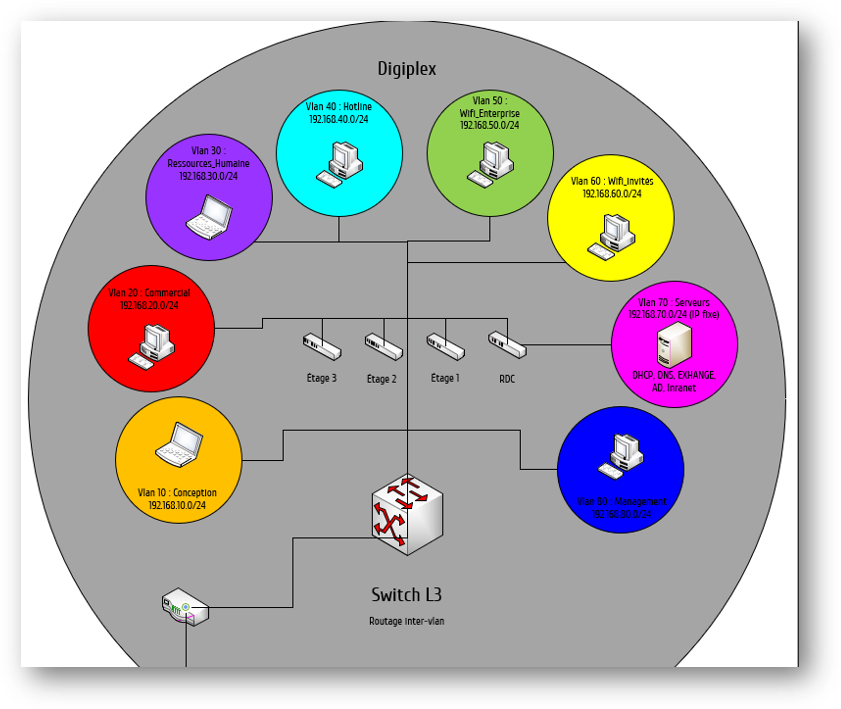

Le maire d’une ville souhaite soutenir une politique numérique auprès des entreprises de la ville. Cette aide arrive au bon moment pour l’ESN eXia qui vient de s’implanter dans la ville. De nombreux contrats ont été décrochés grâce à cette politique de soutien.
Le but du projet est de fournir une infrastructure réseau fonctionnel et répondant à une demande pour chaque bâtiment de la ville. Il s'agit par exemple de raccorder les postes en Vlan et de les raccorder à internet.
Le projet dans son ensemble m'a permis d'apprendre :
- Les bases en matière de protocoles réseaux (SSH, TCP/IP, DHCP, etc.)
- Les bases de la configuration réseau (création de Vlan, routing, VTP)
- Utiliser le logiciel Cisco Packet Tracer pour réaliser des simulations de configurations réseau.
- Gestion de projet avec le diagramme de GANTT et la stratégie de déploiement.
- Utilisation de Visio pour faire des schémas réseau.
Schématisation
Pour commencer nous avons réalisé un schéma de l'infrastructure réseau de chaque bâtiment de la ville dans un seul schéma qui comprend donc tout le réseau de la ville. Ceci nous permet d'avoir une vue d'ensemble du projet et de bien fixer l'objectif à atteindre. Le schéma à été réalisé avec Microsoft Visio et en voici quelques extraits.
Tableau d'adressage
Adressage des bâtiments (publique et privé)
Avant de se lancer dans la configuration réseau, nous avons dû établir un plan détaillé du réseau. C'est pourquoi nous avons réalisé l'adressage de tous les bâtiments de la ville. Nous savons le nombre postes à connecter pour la plupart des bâtiments et certaines plages d'adresses sont demandées.
Vous trouverez le tableau d'adressage qui en résulte, ci-dessous.
bâtiment ESN eXia
bâtiment Engie
bâtiment Digiplex
Déploiement
Dernière phase du projet, il faut passer à la configuration réseau de chaque bâtiment pour tout simplement atteindre les objectifs fixés. Nous pouvons réaliser tout ceci en simulation avec le logiciel Cisco Packet Tracer. Voici ce à quoi ressemblent certaines infrastructures à la fin du projet.